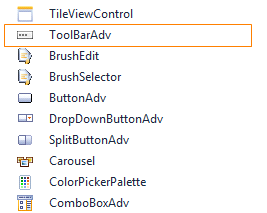

Follow the below steps to add ToolBarAdv Control to WPF Application:
1. Create a new WPF project.
2. ToolBarAdv Control will be listed in the Tool Box.

Figure 1104: ToolBarAdv in Tool Box
3. Drag and drop the control to the designer.
Note: Following XAML code will be automatically added in the XAML Viewer. You can also manually add this code instead of dragging the control from ToolBox.
|
[XAML] <syncfusion:ToolBarAdv Height="100" HorizontalAlignment="Left" Margin="92,90,0,0" Name="toolBarAdv1" VerticalAlignment="Top" Width="200" />
|
4. ToolBarAdv Control is added.